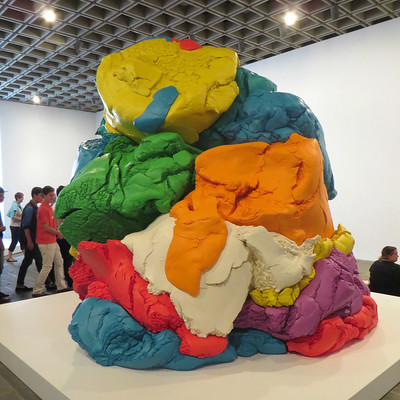

Thank god for long weekends! The whole company had today off for personal enrichment, so I chose to visit The Whitney and see an installation I've been meaning to visit for ages. As you all know I'm absolutely obsessed with play-doh, and Jeff Koons' sculpture Play-Doh blew me away. It was really interesting that they had chosen to show such an installation (which would obviously be out of place in any other context) in his last exhibit with the museum. I'm pretty sure this is the first time I've ever heard of: our very own play-doh being transformed into a "high art" installation, by one of the highest regarded artists of all time. Bonkers!
In case you were interested, that is eight colours of play-doh, squeezed through an industrial sized pastry bag, on four enormous 4ft by 8ft canvas boards. Each colour was squeezed on separately, "randomly" forming the colours into wave-like ribbons. When I was in high school my art teacher also had us try this with poster paint and a toothpaste bag- but the results weren't even close to being this good. It barely looks like play-doh! Koons is one of only a few people who can put their finger on that zero-point of art and pop it with a sniff.
Now I'm off to enjoy some pizza, rabit food and sunflower seeds with my furry friend Sylvan